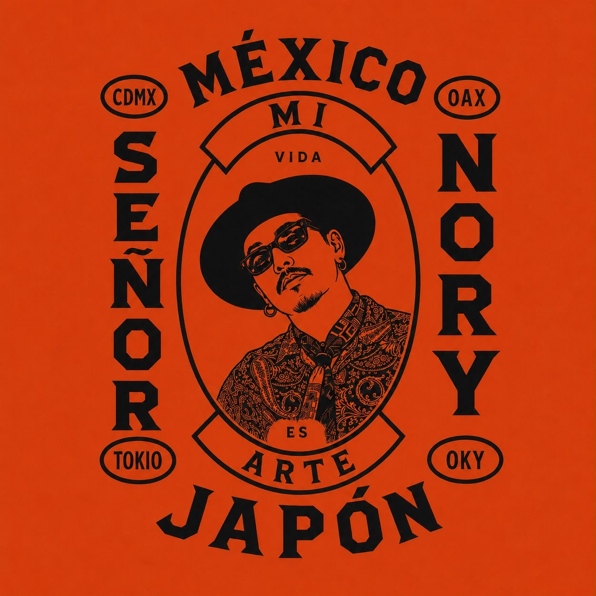
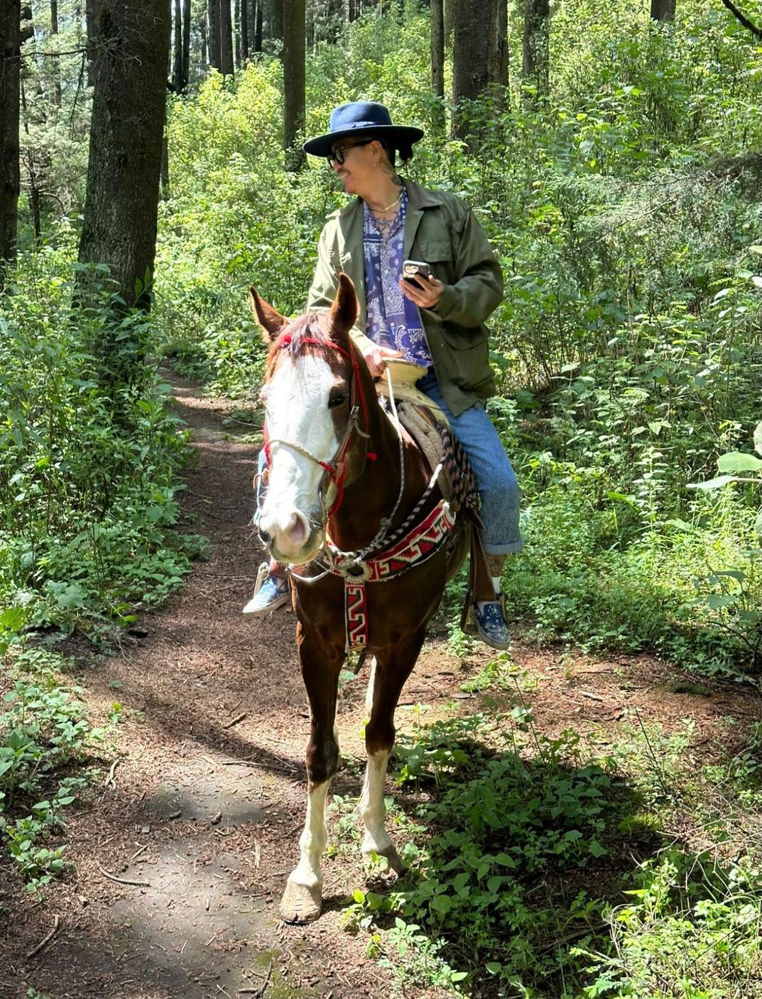
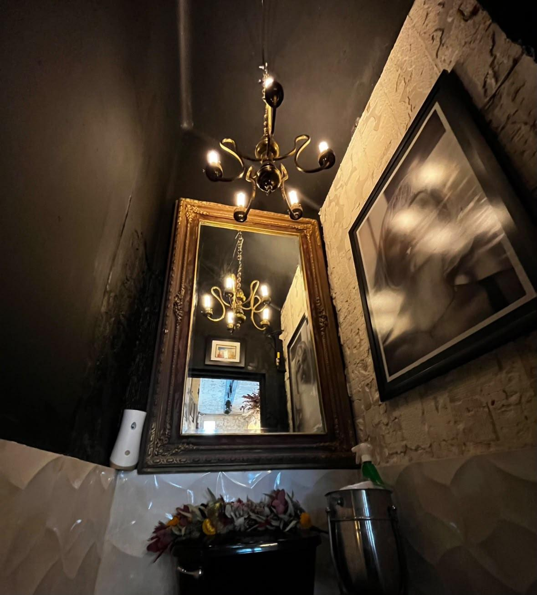

メキシコ在住10年以上。デニムと繊維文化の聖地・岡山出身。
BEAMSで培った審美眼と編集力を礎に、現在はメキシコを拠点に活動。日本とメキシコ、二つの文化を横断しながら、独自の視点で再構築するカルチュラルキュレーター。
Más de 10 años viviendo en México. Originario de Okayama, Japón — ciudad del denim y los textiles.
Con la base del ojo crítico y la capacidad de edición que cultivó en BEAMS, hoy trabaja desde México. Cruzando dos culturas, Japón y México, es un curador cultural que reconstruye desde su propia mirada.
Living in Mexico for over 10 years. Originally from Okayama, Japan — a city known for denim and textiles.
Building on the eye and editorial sense honed at BEAMS, now based in Mexico. Crossing between Japan and Mexico, a cultural curator reconstructing through his own point of view.
小学5年生で美容師を志し、18歳で海外に自分の店を持つことを決意。
メキシコへ渡る前に掲げたのは、日本とメキシコの架け橋になること。
現在はメキシコで美容師として活動しながら、日本のフュージョンレストランのクリエイティブディレクションにも携わる。
Decidió ser estilista en quinto de primaria, y a los 18 años se propuso tener su propio salón en el extranjero.
Antes de partir a México, se propuso ser un puente entre Japón y México.
Hoy trabaja como estilista en México, mientras también participa en la dirección creativa de un restaurante fusión japonés.
He decided to become a hairstylist in fifth grade, and at 18 set his sights on having his own salon abroad.
Before moving to Mexico, he set out to become a bridge between Japan and Mexico.
Now working as a hairstylist in Mexico, while also involved in creative direction for a Japanese fusion restaurant.
旅、レストラン、服、音楽、アート。長く親しみ、育ててきた感性を、自ら選び、組み合わせ、新しい価値として届ける側へ。
現在は、ビンテージショップやレストランのプロジェクトも進行中。
美容、ファッション、食、空間。衣・食・住を横断しながら新しい体験を生み出し、この世界観に共鳴する人たちと、次の場所や文化をつくっていきたい。
ヘアサロン、ビンテージ、レストラン。ジャンルを越えて、個性と感性を持ち寄り、共に形にしていく仲間を募集している。
Viajes, restaurantes, moda, música, arte. Una sensibilidad cultivada por mucho tiempo, para elegirla, combinarla y ofrecerla como nuevo valor.
Actualmente también en marcha proyectos de tiendas vintage y restaurantes.
Belleza, moda, gastronomía, espacio. Cruzando moda, comida y hogar para crear nuevas experiencias, junto a quienes resuenan con esta visión, construyendo juntos el próximo lugar y cultura.
Salón de belleza, vintage, restaurante. Buscando compañeros que, más allá del género, aporten su personalidad y sensibilidad para crear algo juntos.
Travel, restaurants, fashion, music, art. A sensibility cultivated over years, now chosen, combined, and delivered as new value.
Currently also developing vintage shop and restaurant projects.
Beauty, fashion, food, space. Crossing fashion, food, and home to create new experiences, building the next place and culture together with those who resonate with this vision.
Hair salon, vintage, restaurant. Looking for collaborators who, beyond genre, bring their personality and sensibility to build something together.
メキシコの食文化への理解を軸に、ブランドコンセプト、SNS戦略、企画、写真・動画、空間演出、音楽、買付け、味・素材・レシピ監修まで。
料理だけではなく、ブランド全体の体験を設計する。
メキシコで得た感覚を、日本のレストランに新しい景色として描く。
Con un profundo entendimiento de la cultura gastronómica mexicana como base: concepto de marca, estrategia de redes sociales, producción, foto y video, ambientación, música, compras y supervisión de sabor, ingredientes y recetas.
No se trata solo de comida — se diseña la experiencia completa de la marca.
Lo que aprendió en México, plasmado como un nuevo paisaje en los restaurantes de Japón.
Grounded in a deep understanding of Mexican food culture: brand concept, social strategy, production, photo and video, space direction, music, sourcing, and supervision of flavor, ingredients, and recipes.
It's not just about the food — it's the full brand experience, designed.
Bringing what he's learned in Mexico back to Japan's restaurants, painted as a new landscape.

レストラン、バー、ホテル、建築、アート、ビンテージ。
メキシコならではの建築美、アートシーン、デザインホテルなど、街に息づく感性と美意識を案内する。
10年以上暮らしてきたからこそ知る、ガイドブックには載らないメキシコへ。
Restaurantes, bares, hoteles, arquitectura, arte, vintage.
Una guía por la belleza arquitectónica, la escena artística y los hoteles de diseño propios de México — la sensibilidad y la estética que laten en la ciudad.
Al México que solo se conoce tras más de 10 años viviendo aquí, el que no aparece en las guías turísticas.
Restaurants, bars, hotels, architecture, art, vintage.
A guide through Mexico's own architectural beauty, art scene, and design hotels — the sensibility and aesthetic that live in the city.
To the Mexico only known after living here for over 10 years — the one you won't find in guidebooks.
メキシコシティ・コンデサを拠点に活動するヘアスタイリスト。
30〜40代の感度の高い顧客を中心に、Hair × Fashionの視点からトータルスタイルを提案。
ニューヨーク、ロサンゼルス、パリ、ロンドンなど、世界各地からアーティスト、ミュージシャン、クリエイターが集う、感性の交差点となるサロン。
Estilista con base en Condesa, Ciudad de México.
Trabaja principalmente con clientes de 30 a 40 años con un alto sentido del estilo, proponiendo un look total desde la perspectiva de Hair × Fashion.
Un salón que se convierte en un cruce de sensibilidades, donde artistas, músicos y creativos de Nueva York, Los Ángeles, París, Londres y otras partes del mundo se reúnen.
Hairstylist based in Condesa, Mexico City.
Working mainly with style-conscious clients in their 30s and 40s, offering total styling through the lens of Hair × Fashion.
A salon that becomes a crossroads of sensibility, where artists, musicians, and creatives from New York, Los Angeles, Paris, London, and beyond come together.
メキシコ、USA、日本。
旅した国や街、ストリートで出会った古着、セレクトブランド、アンティーク家具を買い付ける。
年代や知名度ではなく、今のスタイルや空間にどう生かせるかをNORYの視点で見極め、選び、提案する。
時代を越えて残ったものに、新しい価値と物語をつないでいく。
México, Estados Unidos, Japón.
Compra ropa vintage, marcas seleccionadas y muebles antiguos encontrados en los países y calles que ha recorrido.
No se basa en la época o el reconocimiento de marca, sino en cómo puede aprovecharse en el estilo o espacio actual, según la mirada de NORY.
Conectando nuevo valor e historias a aquello que ha perdurado a través del tiempo.
Mexico, the USA, Japan.
Sourcing vintage clothing, select brands, and antique furniture found in the countries and streets he's traveled.
Not based on era or brand recognition, but on how it can serve today's style or space — judged, chosen, and proposed through NORY's own eye.
Connecting new value and stories to what has endured across time.

空間の個性を読み取り、家具、照明、色、素材をコーディネート。
自ら買い付けたアンティーク家具やオブジェを織り交ぜ、異なる時代や文化を編集し、その場所にしか生まれない空気と世界観をデザインする。
Lee la personalidad de cada espacio y coordina muebles, iluminación, color y materiales.
Combinando muebles antiguos y objetos que él mismo ha comprado, edita elementos de distintas épocas y culturas para diseñar una atmósfera y un mundo únicos de ese lugar.
Reads the character of each space and coordinates furniture, lighting, color, and materials.
Weaving in antique furniture and objects he's sourced himself, he edits elements from different eras and cultures to design an atmosphere and world unique to that place.